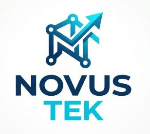

OmegaUTTEC
OmegaUTTECIntroducción
OmegaUTTEC es una plataforma web, de uso exclusivo de la UTTEC, que reúne en un solo lugar todo el ciclo de la estadía profesional: el perfil del alumno, la postulación a empresas, la aceptación, los reportes, la evaluación y las cartas de término.
Cada persona entra con su rol y solo ve lo que le corresponde.
¿A quién va dirigido?
Alumnos
Arman su perfil, se postulan y dan seguimiento a su estadía y a sus reportes.
Empresas
Revisan perfiles ordenados por compatibilidad y aceptan o rechazan postulaciones.
Asesores académicos
Reciben alumnos según su disponibilidad, califican y firman.
Administradores
Gestionan el catálogo de empresas, los convenios y el proceso completo.
Historia del proyecto
La estadía es la etapa final de la carrera, y también una de las más lentas de gestionar. OmegaUTTEC nació para cambiar eso.
Antes
- Formatos llenados a mano, una y otra vez.
- Esperas largas entre alumno, empresa y escuela.
- Asesores asignados sin ver su carga real.
- Reportes técnicos revisados 100 % de forma manual.
Con OmegaUTTEC
- Postulación automatizada: un puente directo entre alumno y empresa.
- Los formatos se autocompletan al aceptar la estadía.
- Asesor asignado según su disponibilidad en tiempo real.
- La IA da un prediagnóstico de cada reporte para revisar más rápido.
El nombre y la imagen
Omega es la última letra del alfabeto griego: la estadía es la etapa final de la carrera.
El búho
Conocimiento y guía, como el asesor que acompaña al alumno.
Escudo y engrane
Seguridad de la información y automatización de procesos, con el emblema UT al centro.
Colores: azul marino (confianza institucional), teal (tecnología y crecimiento), cyan (innovación, usado para la IA) y verde UTTEC (pertenencia).
Objetivo
Optimizar, agilizar y modernizar la gestión de las estadías profesionales de la UTTEC en una sola plataforma.
Inserción laboral
Puente directo entre alumno y empresa.
Cero datos repetidos
Menos errores humanos: la información se captura una sola vez.
Carga docente justa
Cada asesor recibe alumnos según su disponibilidad.
Mejores evaluaciones
Retroalimentación de la IA en menos de 30 segundos.
Cómo funciona
El recorrido de una estadía, de principio a fin:
- Alumno
Arma su perfil
Elige etiquetas de sus habilidades.
- Sistema
Calcula compatibilidad
Porcentaje de coincidencia con cada vacante.
- Empresa
Acepta o rechaza
Ve a los aspirantes ordenados por compatibilidad.
- Sistema
Documentos y asesor
Genera la carta en PDF y asigna un asesor disponible.
- Inteligencia artificial
Revisa el reporte
Estructura, coherencia y ortografía.
- Asesores
Califican y firman
Aprobación final, con notificaciones.
Cinco módulos
Vinculación
Catálogo de empresas afiliadas y envío del CV desde el sistema.
Convenios
El alumno propone empresas que aún no están en el catálogo.
Empresarial
La empresa evalúa perfiles y acepta o rechaza postulaciones.
Automatización
Autollenado de formatos, asignación de asesor y carta de aceptación.
Evaluación con IA
Revisión de los reportes técnicos de la estadía.
Desarrollo
Herramientas con las que se construyó OmegaUTTEC y la forma de trabajo del equipo.
| Capa | Herramienta | Para qué se usa |
|---|---|---|
| Frontend | Vue.js + Vuetify | Interfaz reactiva y adaptable a móviles |
| Backend | Laravel · API REST | Lógica de negocio y asignación automática (patrón MVC) |
| Base de datos | PostgreSQL / MySQL | Relaciones muchos a muchos para las etiquetas de habilidades |
| Inteligencia artificial | API de OpenAI o Gemini | Revisión de reportes con instrucciones ajustadas a los lineamientos UTTEC |
Metodología ágil: Scrum
Trabajo iterativo e incremental: cada módulo se desarrolla, prueba y valida por separado en sprints, con reunión diaria de 15 minutos, tablero Kanban y revisión de código antes de integrar cambios.
- Planificación y requerimientosRoles, historias de usuario y backlog priorizado.
- DiseñoBase de datos normalizada, arquitectura MVC y wireframes UI/UX.
- DesarrolloAPI REST, vistas en Vue e integración de la IA.
- PruebasUnitarias, de integración y del ciclo completo de un alumno.
- DespliegueServidores en la nube y migración de empresas y asesores.
- MantenimientoMonitoreo, corrección de errores y mejoras a la IA.
Equipo y líder del proyecto
Novus Tek: “Innovación que conecta.” Un equipo de cinco que diseña y construye software para resolver procesos reales de la universidad.

Cristóbal Gordillo
Líder de Diseño y Experiencia de Usuario

Jessica Alvarado
Líder de Programación

Rodrigo Villeda
Coordinador de Desarrollo de Software
Xizmel Hernández
Coordinadora de Diseño y Logística

Demetrio Peralta
Responsable de Operaciones y Logística


Profesor a cargo del proyecto: Dr. Omar Téllez BarrientosAsignatura: Gestión del Proceso de Desarrollo de Software · Prof. Hugo Humberto Arvizu Rosas · Grupo 10IDS2
Manuales y recursos
Todo lo que necesitas para usar, entender y presentar OmegaUTTEC.
Manual de usuario
Guía paso a paso de cada pantalla, para alumnos, empresas y asesores.
Abrir PDFManual técnico
Arquitectura, herramientas y forma en que se construyó la plataforma.
Abrir PDFPresentación de la expo
El recorrido completo del proyecto: identidad, solución, metodología y riesgos.
Ver presentaciónPrueba OmegaUTTEC
Entra a la plataforma en funcionamiento y recorre el ciclo de una estadía.
La primera vez, tu navegador puede mostrar una página de aviso de ngrok con el botón «Visit Site». Tócalo para continuar. La plataforma está disponible mientras el servidor del equipo esté encendido.